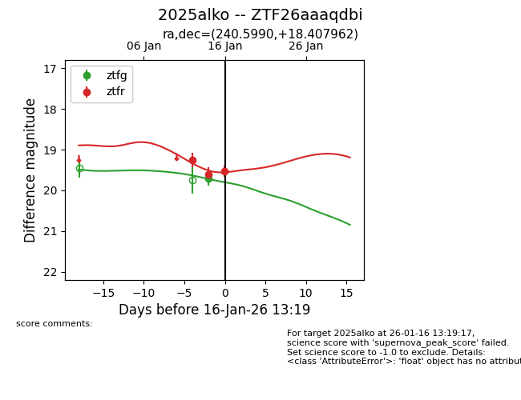
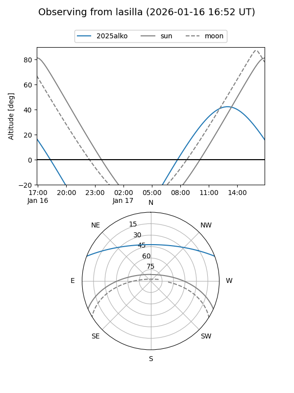
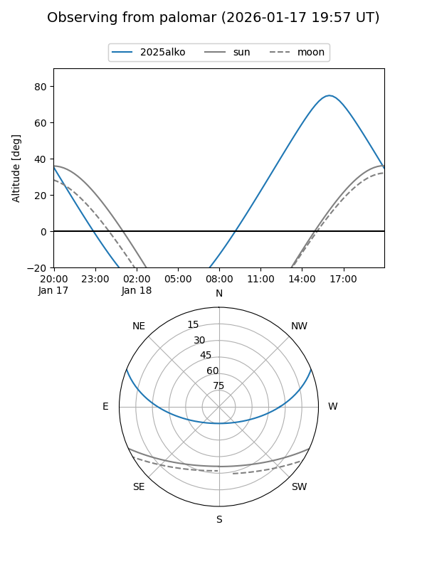
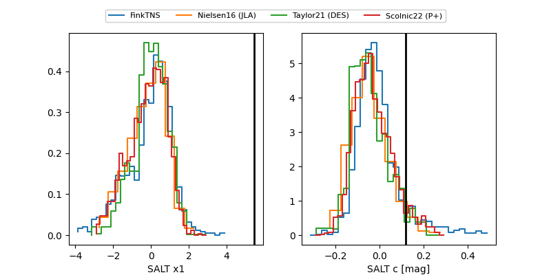

2025alko
Target 2025alko at 2026-01-14 15:10
Aliases and brokers:
FINK: link
Lasair: link
ALeRCE: link
TNS: link
YSE: link
alt names
ZTF26aaaqdbi (ztf,fink_ztf)
2025alko (tns,yse)
Coordinates:
equatorial (ra, dec) = 240.5990,+18.40796
equatorial (HMS+DMS) = 16:02:23.76,+18:24:28.66
galactic (l, b) = (32.1227,+45.38848)
Flags:
Photometry:
last ztfg=19.70, ztfr=19.60
1 ztfg, 2 ztfr detections
Lightcurve

Visibility


Additional plots
